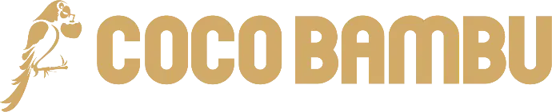
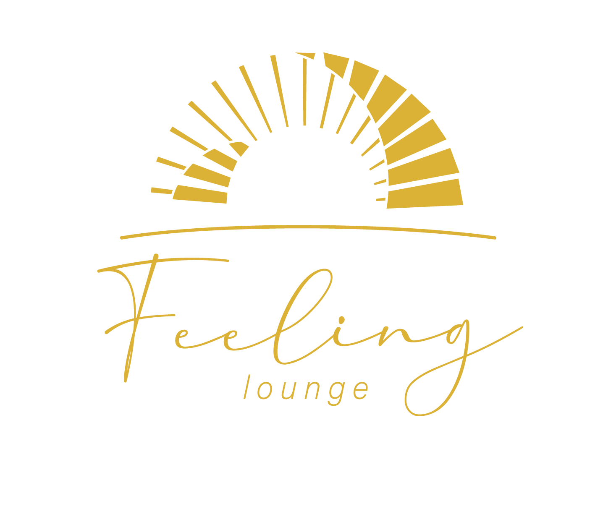

Atendimento que não dorme
O cliente chega às 2 da manhã, no fim de semana, no feriado. Alguém responde na hora, com o tom da sua casa, sem deixar ninguém esperando.
 K2IA
K2IA
K2IA · inteligência artificial aplicada ao seu negócio
A K2IA cria e treina uma inteligência sob medida para a sua empresa, do primeiro contato com o cliente até a tarefa que a equipe repete todo dia. Role a página e acompanhe uma sexta à noite.
23:04 · sexta feira
Uma reclamação cai no WhatsApp da loja. Numa noite comum, ela ficaria ali até segunda.
Não é robô genérico. É uma inteligência que sabe como a sua empresa fala, o que vende e como atende.
Quem reclama vira um aviso imediato para o gerente daquela loja.
Dúvida de cardápio e reserva, reclamação, evento para fechar e candidato a vaga. Cada conversa vai para quem precisa, sem fila.
A inteligência que trabalha por baixo da sua operação, todos os dias, sem barulho.
01 · Como funciona
Madrugada, fim de semana, feriado. Ninguém fica esperando.
Sabe como a sua empresa fala, o que vende e como atende cada cliente.
Responde dentro das suas regras e não inventa o que não sabe.
Quando o caso pede um humano, passa para a pessoa certa, no momento certo.
Registra tudo nas ferramentas que a equipe já abre todo dia.
02 · Soluções
Não vendemos tecnologia. Resolvemos o problema que faz você trabalhar mais do que deveria.
O cliente chega às 2 da manhã, no fim de semana, no feriado. Alguém responde na hora, com o tom da sua casa, sem deixar ninguém esperando.
Aquela ferramenta sob medida que você procurou e nunca achou pronta. A gente constrói exatamente do jeito que sua operação funciona.
Tarefa repetida que come o dia da sua equipe passa a rodar sozinha, sem erro de digitação e sem ninguém preso copiando e colando.
Não é robô genérico. É um assistente que sabe como sua empresa fala, o que ela vende e como ela atende cada cliente.
Inteligência artificial que entende do seu negócio de verdade, responde dentro das suas regras e não inventa o que não sabe.
Aquele projeto que vive na sua cabeça vira algo funcionando, na frente do cliente, mais rápido do que você imagina.
lojas da rede Coco Bambu atendidas
por dia, sete dias por semana, feriado incluso
frentes num só atendimento: reserva, reclamação, evento e vaga
operações rodando hoje com a K2IA
03 · Trabalhos em operação
Não é demo nem promessa de palco. É gente que coloca a operação na rua todo dia e deixou a K2IA cuidar da parte que ninguém dava conta de responder a tempo.

Rede de restaurantes · mais de 50 lojas
A K2IA botou alguém para atender de verdade em quatro frentes ao mesmo tempo. Quem chega com dúvida de cardápio ou quer reservar é respondido na hora. Quem reclama vira um aviso imediato para o gerente daquela loja. Quem quer fechar um evento é conduzido sem espera. E quem se candidata a uma vaga já chega filtrado para quem faz sentido.

Lounge à beira do mar e eventos · Floripa
A K2IA assumiu a conversa de quem chega querendo reservar, perguntar ou reclamar. Nada mais fica parado esperando a equipe respirar entre um atendimento e outro.
Clube com várias unidades
A K2IA pegou na mão de quem quer entrar e marcou a entrevista de novo associado na hora da conversa, sem deixar o interesse esfriar até alguém abrir a agenda.

Educação · especialização
A K2IA botou para responder na hora quem chega no WhatsApp querendo fazer a especialização, para a dúvida não virar desistência entre a vontade de estudar e a inscrição.
Tênis e beach tennis · Floripa
A K2IA assumiu a conversa inteira de aluno e de lead. Agenda a aula experimental de quem chega novo e cuida do relacionamento de quem já treina, da captação ao dia a dia de quadra.
A IA parou de ser promessa. Na K2IA, ela trabalha.
A inteligência artificial deixou de ser assunto de futuro. Hoje ela atende, organiza, responde e resolve, dentro de empresas que faturam de cinquenta mil a milhões por mês. O que separa quem aproveita disso de quem só assiste depende de uma coisa: ter quem crie e treine essa inteligência sob medida para o seu negócio e responda por ela. É isso que a K2IA faz. Criamos e treinamos a inteligência que trabalha por baixo da sua operação, todos os dias, sem barulho.
04 · Contato
Conte onde aperta na sua operação. Em uma conversa rápida, a gente diz com franqueza se a inteligência da K2IA resolve, e como.
Cada um dos cases começou do mesmo lugar onde você provavelmente está agora: uma conversa importante esperando alguém ter tempo. A gente senta junto, olha onde a sua operação perde essas conversas, e você decide com calma.